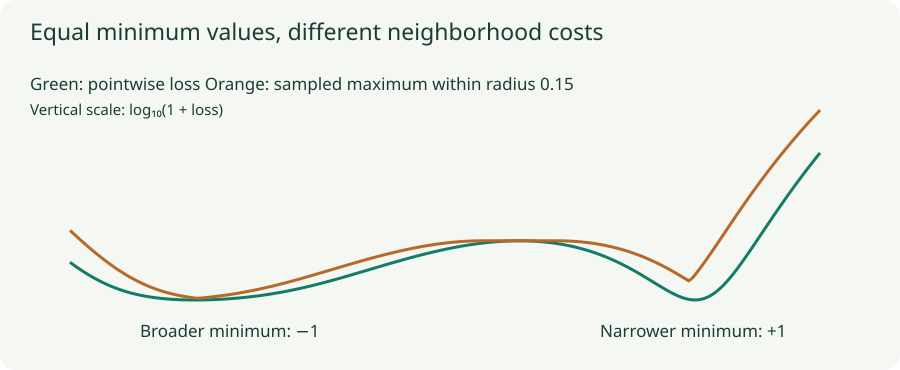

Adversarial Training and SAM: Optimize a Neighborhood
Derive worst-case $L_\infty$ (FGSM) and $L_2$ perturbations from a single inner dot-product maximization, then contrast input-space adversarial training with weight-space SAM.
Whereas random noise minimizes the average loss in a neighborhood, min–max methods minimize the worst-case loss inside a ball. Adversarial training perturbs the input $x+\delta$ to resist adversarial examples; Sharpness-Aware Minimization (SAM) perturbs the weights $w+e$ to seek flat minima.
1. Adversarial training: worst-case input perturbations
Adversarial training (Madry et al., 2018) solves a saddle-point problem over an allowed perturbation ball $\|\delta\|_p\le\varepsilon$:
To solve the inner maximization to first order, linearize $\ell(f_\theta(x+\delta),y)\approx\ell(f_\theta(x),y)+g_x^\top\delta$, where $g_x=\nabla_x\ell(f_\theta(x),y)$. Choosing $\delta$ to maximize $g_x^\top\delta=\sum_j g_{x,j}\delta_j$ depends on the norm ball:
- $L_\infty$ ball ($\max_j|\delta_j|\le\varepsilon$, FGSM): Each coordinate $\delta_j\in[-\varepsilon,\varepsilon]$ can be maximized independently by matching the sign of $g_{x,j}$, achieving $\max_{\|\delta\|_\infty\le\varepsilon}g_x^\top\delta=\varepsilon\|g_x\|_1$ at
$$\delta_{\rm FGSM}=\varepsilon\operatorname{sign}(g_x).$$
- $L_2$ ball ($\|\delta\|_2\le\varepsilon$): By Cauchy–Schwarz, $g_x^\top\delta\le\|g_x\|_2\|\delta\|_2\le\varepsilon\|g_x\|_2$, with equality when $\delta$ points along $g_x$:
$$\delta_{L_2}=\varepsilon\frac{g_x}{\|g_x\|_2}.$$
For $g_x=(3,-4)$ (so $\|g_x\|_2=5$) and $\varepsilon=0.1$, the $L_\infty$ step is $(0.1,-0.1)$ while the $L_2$ step is $(0.06,-0.08)$. PGD (Projected Gradient Descent) refines this single-step linearization by taking $K$ smaller ascent steps and projecting back onto the ball after each step: $\delta^{(k+1)}=\Pi_{\|\delta\|_p\le\varepsilon}\bigl(\delta^{(k)}+\alpha\operatorname{sign}(\nabla_\delta\ell)\bigr)$.
2. SAM: worst-case weight perturbations for flat minima
Sharpness-Aware Minimization (Foret et al., 2021) applies the exact same $L_2$ inner maximization in parameter space to penalize sharp valleys where nearby weights have much higher loss:
Using the first-order $L_2$ solution $e(w)=\rho\frac{\nabla_w L(w)}{\|\nabla_w L(w)\|_2}$, each SAM step runs two forward–backward passes:
Trace $L(w)=\frac12w^2$ from $w_0=1$ with $\rho=0.1$ and $\eta=0.2$: plain SGD measures $g(1)=1$ and steps to $1-0.2(1)=0.8$. SAM climbs to $w_{\rm adv}=1+0.1(1)=1.1$, measures $g(1.1)=1.1$, restores $w_0=1$, and steps to $w_1=1-0.2(1.1)=0.78$.

3. Lab: compare pointwise loss and SAM’s neighborhood probe
Probe a broader and a narrower minimum
The exact plotted loss is $L(w)=(w^2-1)^2[0.3+(w+1)^2]$. The orange curve approximates the neighborhood maximum by evaluating 101 evenly spaced perturbations in $[-\rho,\rho]$ at each location. The vertical axis shows $\log_{10}(1+L)$ so both valleys remain visible; readouts show the original loss. Compare the sampled maximum with SAM’s single gradient-directed probe. Step buttons use learning rate $0.01$.
4. Two-pass SAM implementation and scale invariance
# Two-pass SAM update on a single mini-batch
loss = criterion(model(x), y)
loss.backward() # Pass 1: compute g = grad L(w)
grad_norm = torch.norm(torch.stack([p.grad.norm(2) for p in model.parameters()]), 2)
with torch.no_grad():
e_list = [rho * p.grad / (grad_norm + 1e-12) for p in model.parameters()]
for p, e in zip(model.parameters(), e_list):
p.add_(e) # climb to w + e
optimizer.zero_grad(set_to_none=True)
criterion(model(x), y).backward() # Pass 2: compute grad L(w + e) on the SAME batch
with torch.no_grad():
for p, e in zip(model.parameters(), e_list):
p.sub_(e) # restore original w before stepping
optimizer.step()Because rescaling two adjacent ReLU layers by $(c,1/c)$ leaves the network function unchanged while altering Euclidean sharpness, ASAM (Adaptive SAM) scales each parameter’s perturbation radius proportionally to $|w|$ so the neighborhood is invariant to layer rescaling. Similarly, Virtual Adversarial Training (VAT) applies worst-case input perturbations $\delta$ to maximize $\operatorname{KL}(p(y\mid x)\|p(y\mid x+\delta))$ on unlabeled examples.
5. Questions worth answering
Because $w_{\rm adv}=w_t+e$ is only a probe location used to evaluate the gradient $\nabla L(w_t+e)$. Leaving $+e$ in place would turn the update into $w_t+e-\eta\nabla L(w_t+e)$, adding an uphill step to every iteration.
FGSM maximizes $g_x^\top\delta$ over an $L_\infty$ box ($|\delta_j|\le\varepsilon$), whose maximum occurs at the box corners $\pm\varepsilon$. SAM maximizes $g_w^\top e$ over a Euclidean $L_2$ sphere ($\|e\|_2\le\rho$), whose maximum aligns with the unit vector $g_w/\|g_w\|_2$.
Sources
Goodfellow, Shlens, and Szegedy, Explaining and Harnessing Adversarial Examples; Madry et al., Towards Deep Learning Models Resistant to Adversarial Attacks; Foret et al., Sharpness-Aware Minimization for Efficiently Improving Generalization; Kwon et al., ASAM: Adaptive Sharpness-Aware Minimization; Miyato et al., Virtual Adversarial Training.